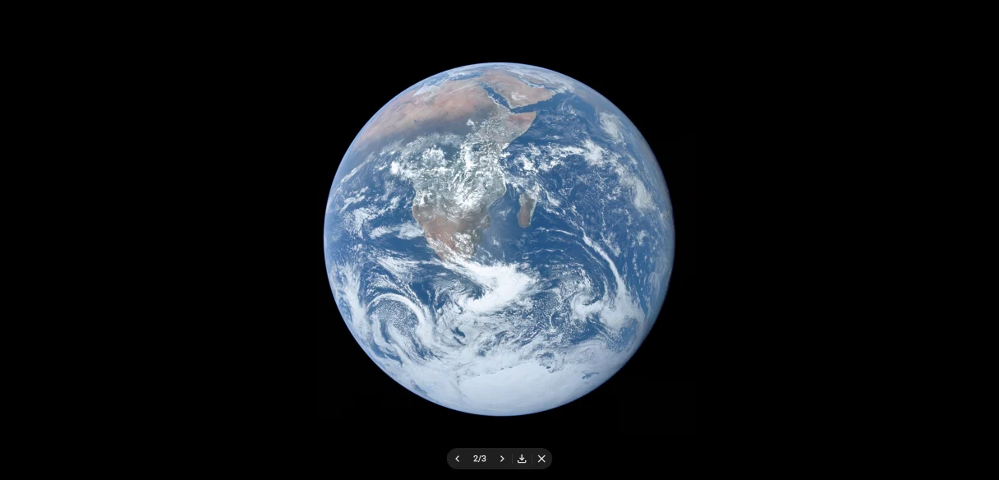
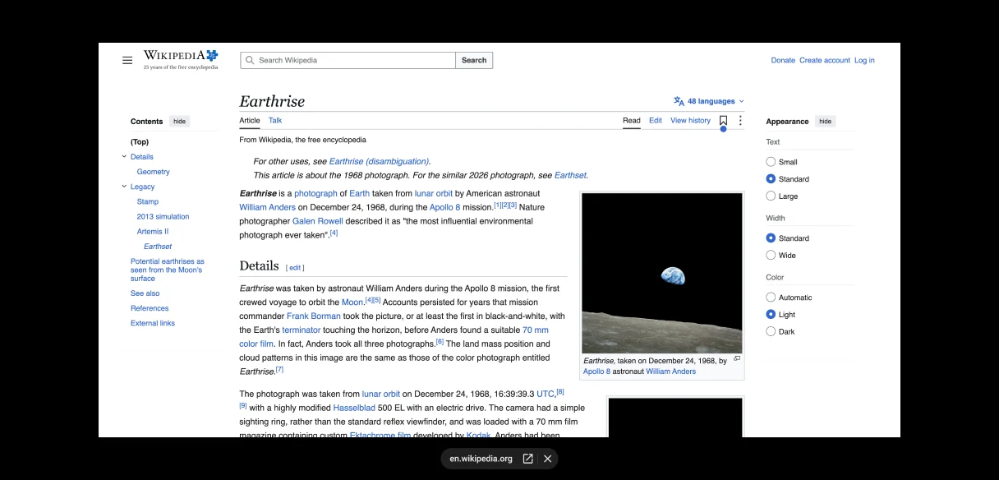
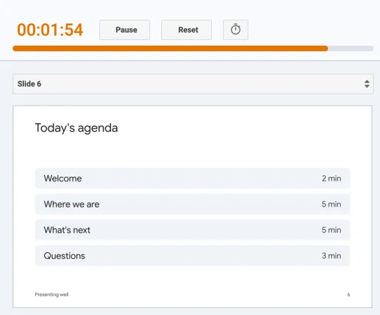
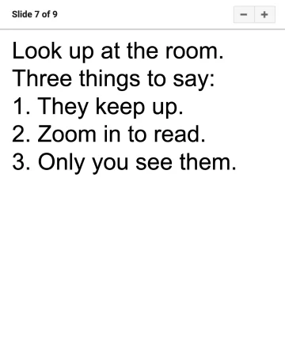
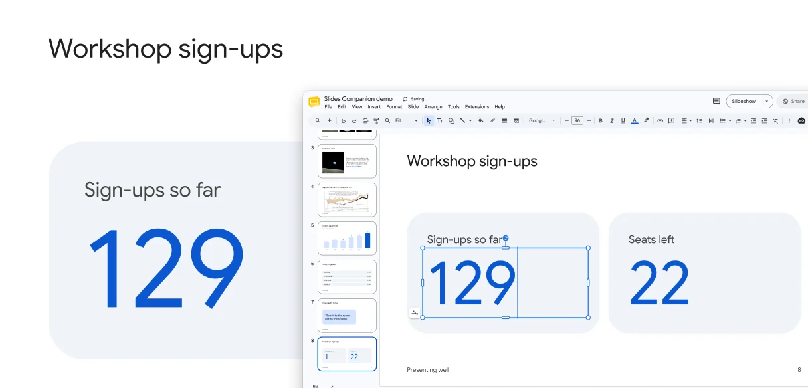

When the back row can’t see
Zoom in on any picture
Click a picture and it fills the screen, so everyone can see it.

Slides Companion for Google Slides™
A companion for Google Slides who keeps an eye on the details, so you can keep yours on the room.
100% Free and open source.
Works in Chrome, Edge, Brave, Dia and other Chrome-based browsers.Works in Chrome and other Chrome-based browsers on your computer.
He’s ready for each one, right there in the slideshow.
When the back row can’t see
Click a picture and it fills the screen, so everyone can see it.

When you need to show a website
Web pages open over your slide, so you never leave the slideshow.

When every minute counts
A countdown in presenter view shows how much time is left, at a glance.

When you present in a call
Share your slideshow in a call, and your notes float beside it where only you can see them.

When the numbers change last minute
Edit the deck, or let a teammate do it, and the slideshow catches up in seconds.

Get a closer look at a detail, then zoom back out.
What you draw with Slides’ pen is still there the next time you present.
Right-click a picture to save it at full size, as it was added to the deck.
He fits right into Google Slides, as if he’d always been part of it. Set up each tool your way, and even tuck him out of sight to keep Slides’ toolbar just as it was.
From the Chrome Web Store, for free.
Any presentation in Google Slides.
Only now, with a few superpowers.
100% Free and open source.
Works in Chrome, Edge, Brave, Dia and other Chrome-based browsers.Works in Chrome and other Chrome-based browsers on your computer.